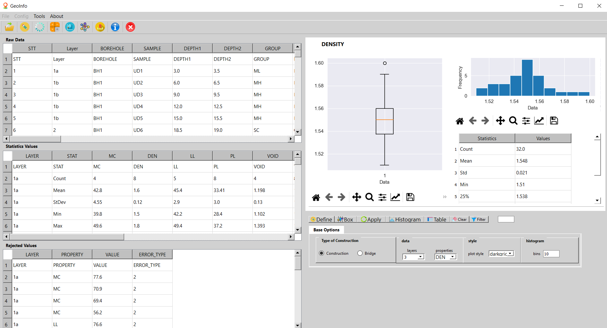
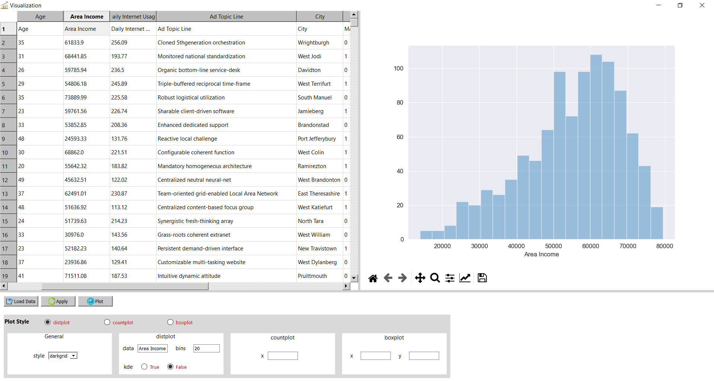
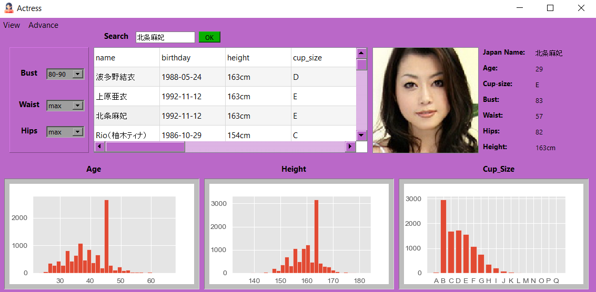
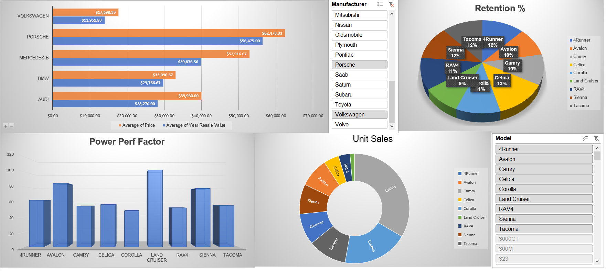
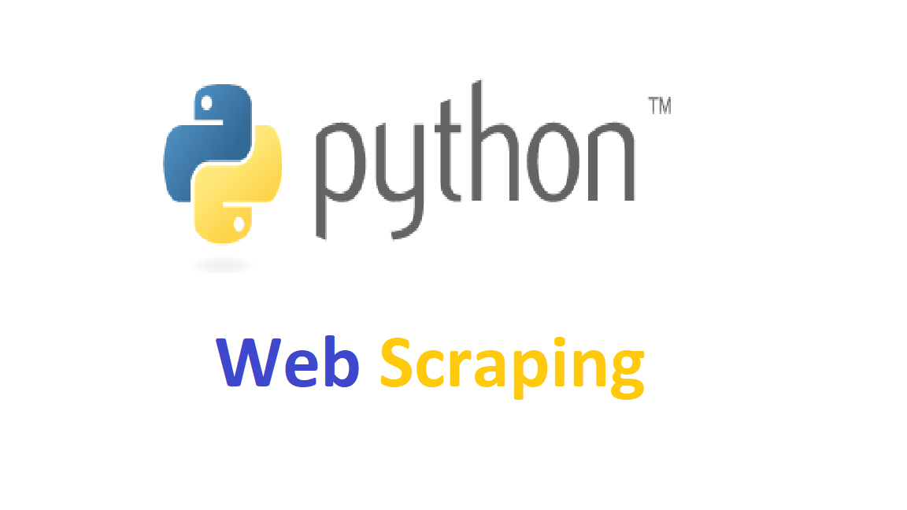

This is geotechnical statistics application that I was designed for a graduate project.
Application allows users to calculate the statistical value, remove outliers value, and it provides several funtions
for data visualization.


In this project, i used KMeans, Gaussian Mixture Model, and MeanShift algorithm to cluster geotechnical data .

This is a project that i came up with and i called it is visualization app. This application helps to visualize data quickly.

This application i got this idea from Data Guy Story. In his video, he built an actress referral progarm using AI but in my app, I built an actress search engine from users input.

Tableau Dashboards for projects on Stock Analytics, Shipping Analytics, Store Analytics, Mart Analytics and HR Analytics.

In this project, i learned about cleaning, analyzing, filtering, sorting data. I learned about using Pivot tables and creating dashboards in excel.

In this project, i collected job data from TimesJobs Website. Next step, i processed the data and saved data in excel format.